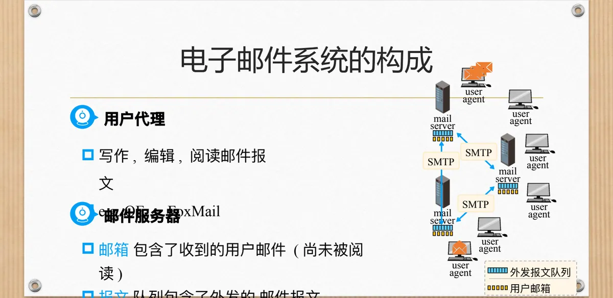
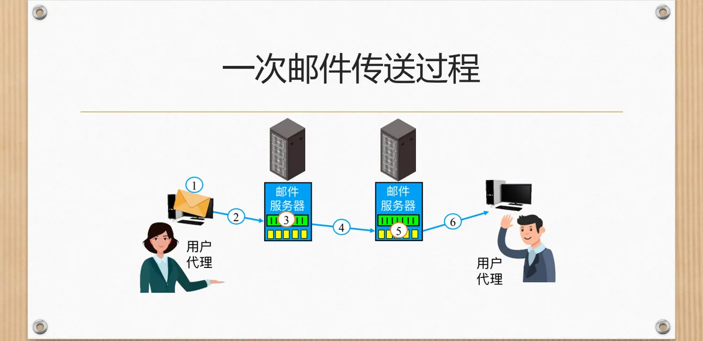
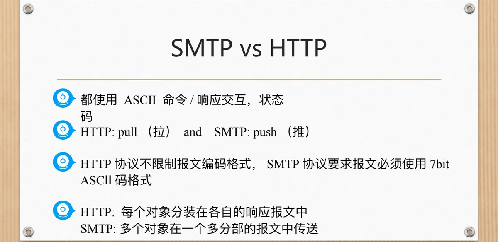
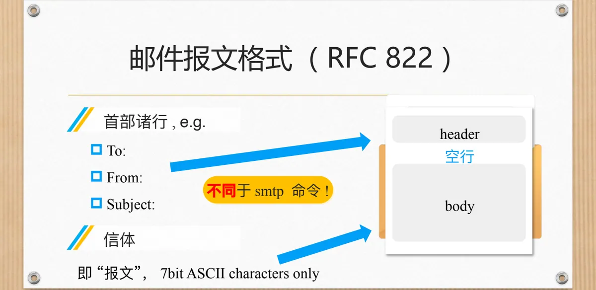
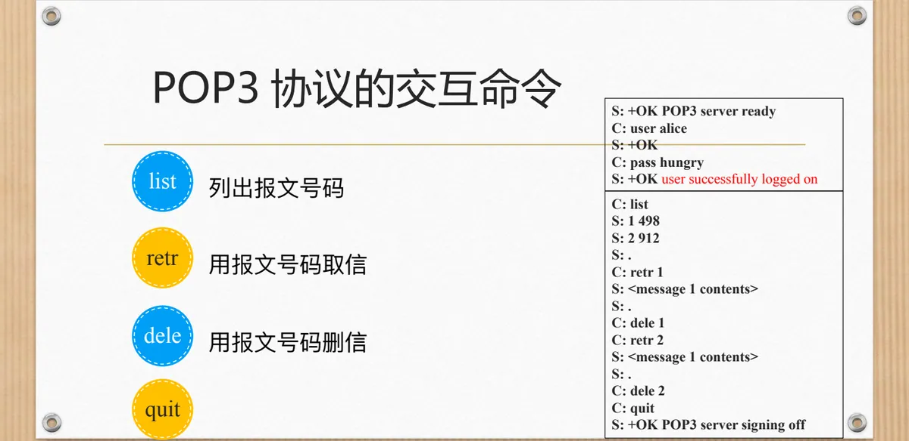

计算机通信与网络 · 第二版讲义 · 第 3 章 网络服务及应用
3.6 电子邮件服务
电子邮件不要求收发双方同时在线：发送方把报文交给自己的邮件服务器，服务器之间相互传送，报文停在接收方服务器的邮箱里等着被取走。本节先看电子邮件系统的组成，再讲 SMTP 怎样把邮件一路推到收件人的服务器，然后拆开一封邮件看它的报文格式，最后交代 MIME 扩展与 POP3、IMAP 等取信办法。
1. 电子邮件系统的构成
电子邮件系统由三类部件构成：用户代理 UA（User Agent）、邮件服务器，以及它们之间使用的协议。用户代理负责写作、编辑和阅读邮件报文，常见的有 OE、FoxMail 这类邮件客户端；邮件服务器为每个用户维护一个邮箱，存放收到而尚未被阅读的邮件，并维护一个外发报文队列，存放等待发出的邮件报文。
从职责上看，客户端的任务是把邮件发送到邮件服务器，服务器的任务是接收和转发邮件，SMTP 协议用在邮件服务器之间发送邮件。一次完整的收发因此要经过「用户代理 → 发送方邮件服务器 → 接收方邮件服务器 → 接收方用户代理」四段路：中间一段是 SMTP 的主场，最后一段则由收件人用 POP3、IMAP 或 HTTP 把邮件取回本地。

2. SMTP 协议
简单邮件传输协议 SMTP（Simple Mail Transfer Protocol）是电子邮件在因特网上传送报文所使用的协议。它使用 TCP 可靠地传送邮件报文，端口是 25，方式为直接传输：从发送方的邮件服务器直接传到接收方的邮件服务器，中途不经过别的服务器转交；发送方还要靠域名解析找到对方服务器的地址（见 3.7 节）。
一次传输分三个阶段：握手（打招呼）、报文传输、结束。三个阶段都靠一来一往的命令/响应交互推动——命令由客户端用 ASCII 文本发出，响应由服务器返回，内容是状态码加一段短语，这与 3.5 节 FTP 的应答、3.4 节 HTTP 的响应状态码是同一个思路。SMTP 还有一条硬性约束：邮件报文必须使用 7-bit ASCII 表示，超出这个范围的字符或二进制数据必须先转换才能送出。
3. 一次邮件传送过程
发送方一侧，用户代理把报文交给本地邮件服务器，进入外发报文队列；发送方服务器与接收方服务器建立 TCP 连接，把报文按规定格式发送过去；接收方服务器收到后放进收件人的邮箱，等收件人启动用户代理时再取走。

报文只在两台邮件服务器之间走一趟，两端用户代理之间没有直接连接，这也是邮件不要求双方同时在线的原因。
4. SMTP 评述
SMTP 有几个特点值得评述。
- 使用持续连接：一对服务器之间建立一条 TCP 连接后可以连续传送多封邮件，不必每封信重新握手；
- 要求报文（首部与信体）全部使用 7-bit ASCII 码，二进制数据无法直接传送；
- 某些代码组合不允许出现在报文中，例如
CRLF.CRLF，此类数据必须编码，通常使用 base-64 或 quoted printable； - SMTP 服务器用
CRLF.CRLF表示邮件报文的结束。
后两条是同一个设计的两面：既然「回车换行 + 句点 + 回车换行」是结束标记，报文正文里就不能原样出现这个组合；7-bit ASCII 与结束标记这两重限制合在一起，使中文、图片、音频无法直接放进邮件——这正是 MIME 要解决的问题。
5. SMTP 与 HTTP 的比较
SMTP 与 HTTP 都是应用层协议，都用 ASCII 命令与响应交互、都以状态码报告结果，但方向与信息组织方式不同。
- 方向：HTTP 是 pull（拉），客户机主动到服务器取内容；SMTP 是 push（推），发送方主动把报文推给接收方；
- 报文组织：HTTP 把每个对象分装在各自的响应报文中，SMTP 把多个对象放在一个多分部的报文中传送；
- 编码限制：HTTP 不限制报文编码格式，SMTP 要求报文必须使用 7-bit ASCII 码格式。

取信是 pull，所以要用 POP3、IMAP 这类由客户机发起的协议。
6. 邮件报文的格式（RFC 822）
SMTP 负责把报文从一台服务器搬到另一台服务器，报文本身长什么样则由另一个标准规定，课件给出的是 RFC 822。一封邮件报文分为两部分：前面是首部（header），由若干首部诸行组成，例如 To:、From:、Subject:；后面是信体（body），即用户要传达的内容，两部分之间用一个空行隔开。

To: bob@someschool.edu
From: alice@someschool.edu
Subject: 邮件主题
（空行）
信体内容……首部行里的 To: 与 From: 容易与 SMTP 命令混为一谈，课件特意提醒：它们不同于 SMTP 命令。SMTP 命令是客户机与服务器之间的「台词」，一次连接用完即止；To:、From:、Subject: 则是写在报文里的内容，用户代理读到它们才知道这封信是谁发的、主题是什么。首部与信体合起来就是「报文」，字符同样只允许 7-bit ASCII。
7. 非 ASCII 码数据的 MIME 扩展
7-bit ASCII 的限制意味着原生的 SMTP 只能传送英文文本。要让邮件装得下中文、图像、音频这些非 ASCII 数据，就要扩展报文格式，这就是多用途因特网邮件扩展 MIME（Multipurpose Internet Mail Extensions）：它不改动 SMTP，而是在报文首部里增加若干行，交代数据是什么类型、用什么方法编码，让接收方能够还原。
From: alice@crepes.fr
To: bob@hamburger.edu
Subject: Picture of yummy crepe.
MIME-Version: 1.0
Content-Transfer-Encoding: base64
Content-Type: image/jpeg
（空行）
base64 encoded data .....
.........................
......base64 encoded data新增的几行各管一件事：MIME-Version 声明 MIME 版本，Content-Transfer-Encoding 说明数据编码方法，Content-Type 声明多媒体类型、子类型与参数；信体里放的是编码后的数据，收件人的用户代理据此解码还原。线路上传送的仍是 7-bit ASCII 字符。
8. 客户机怎样取回邮件
前面的过程只把邮件送到收件人的邮件服务器，到了服务器不等于到了收件人手上。收件人要读信，还得把邮件从服务器拉回自己的计算机，课件给出三种方法：POP3 协议、IMAP 协议，以及直接用 HTTP，即在浏览器里收发邮件的万维网邮件。
（1）POP3 协议的认证阶段
邮局协议第 3 版 POP3（Post Office Protocol version 3）的会话很直白：客户机先认证，用 user 命令报用户名、pass 命令报口令，服务器逐条应答。
S: +OK POP3 server ready
C: user alice
S: +OK
C: pass hungry
S: +OK user successfully logged on应答只有两类：以 +OK 开头表示成功，以 -ERR 开头表示失败。认证通过后，会话进入命令交互阶段。
（2）POP3 协议的交互命令
| 命令 | 作用 |
|---|---|
| list | 列出报文号码 |
| retr | 用报文号码取信 |
| dele | 用报文号码删信 |
| quit | 结束会话，服务器停止服务 |
C: list
S: 1 498
S: 2 912
S: .
C: retr 1
S: <message 1 contents>
S: .
C: dele 1
C: retr 2
S: <message 2 contents>
S: .
C: dele 2
C: quit
S: +OK POP3 server signing off
list 的应答里，498 与 912 是两个报文的大小，单独一行的句点表示列表结束；取信时服务器先送回报文内容，再用一个「.」表示这一封送完；dele 只是做删除标记，要到 quit 时才真正删除。这与 SMTP 用 CRLF.CRLF 表示结束一脉相承。
（3）POP3 评述
POP3 会话是没有状态的：服务器不保留跨会话的信息，每次取信都是独立的一次会话。采用「下载-删除」时，邮件取走后服务器不再保留，用户更换客户机就无法再次阅读原来的邮件；采用「下载-保存」时，则会在不同的客户机上保存邮件的副本。更要紧的是，用户使用 POP3 无法在邮件服务器上对自己的邮件进行重组织，只能将邮件下载到本地计算机再进行重组织。
（4）IMAP 协议
因特网报文访问协议 IMAP（Internet Message Access Protocol）针对的正是这些问题。IMAP 维护了 IMAP 会话的用户信息：把所有的邮件都保存在服务器上，允许用户在服务器上组织自己的邮件目录，管理的内容是目录名以及报文 ID 与目录名之间的映射关系。报文始终留在服务器上，无论从哪台客户机登录，看到的都是同一批邮件。
本节小结
- 电子邮件系统由用户代理、邮件服务器与协议组成：用户代理负责写作、编辑与阅读，邮箱存放收到的邮件、外发报文队列存放待发邮件，服务器之间用 SMTP 发送邮件；
- SMTP 用 TCP 的 25 端口直接传送邮件报文，一次传输分握手、报文传输、结束三个阶段，全程是 ASCII 命令与「状态码 + 短语」响应的交互，并使用持续连接；
- SMTP 要求首部与信体都是 7-bit ASCII，用 CRLF.CRLF 表示报文结束，故需编码；与 HTTP 相比，SMTP 是 push、多个对象放在一个多分部报文中、限制编码，HTTP 是 pull、每个对象一个响应报文、不限制编码；
- RFC 822 规定报文由首部、空行与信体构成，首部行 To:、From:、Subject: 不同于 SMTP 命令；MIME 靠 MIME-Version、Content-Type 等首部行让非 ASCII 数据随邮件传送；
- 取信是 pull：POP3 先认证（user、pass，应答只有 +OK 与 -ERR），再用 list、retr、dele、quit 交互，会话无状态且无法在服务器上重组织邮件；IMAP 把邮件全部保存在服务器上，用目录名与报文 ID 的映射管理邮件。详见第一版讲义 6.6 电子邮件。